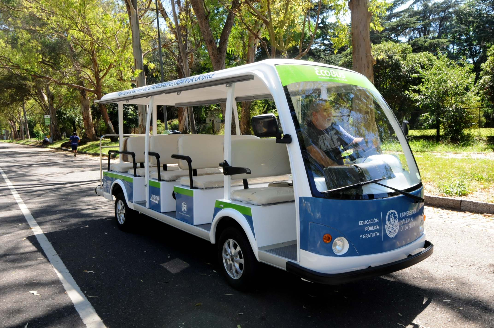

La UNLP pondrá a circular el ecobus, primer transporte 100% ecológico y gratuito
Con el imponente paseo del Bosque como escenario, el Eco-Bus Universitario realizó ayer su viaje inaugural, transformándose así en el primer transporte cien por ciento ecológico de la ciudad. Por primera vez, y con las máximas autoridades universitarias y estudiantes a bordo, el flamante bus eléctrico completó el recorrido en torno al predio de la facultad de Ciencias Astronómicas y Geofísicas. Ideado y gestado íntegramente por la Universidad Nacional de La Plata, su puesta en marcha representa un verdadero avance en materia de investigación aplicada en energías renovables. A partir de ahora, el servicio funcionará de lunes a viernes de 16 a 22 horas, trasladando a los estudiantes por las calles del bosque, desde Astronomía por la Avenida Pereyra Iraola, hasta el parador de la Avenida 60, ubicado frente a la facultad de Medicina. Esta parada es cercana además a las facultades de Naturales, Agrarias y Veterinarias. El Eco-Bus de la UNLP funciona íntegramente con baterías de litio desarrolladas en los laboratorios de la Universidad. Se trata de una fuente de energía limpia que no requiere de los combustibles fósiles contaminantes para impulsar el vehículo.
El proyecto del Eco-Bus, que comenzó a gestarse a fines de 2012, estará destinado especialmente a la comunidad universitaria –aunque será de uso público-. El presidente de la Universidad Nacional de La Plata, Raúl Perdomo, remarcó que “la puesta en marcha del Eco Bus es el fruto del trabajo que viene realizando la Universidad, y especialmente sus investigadores, en materia de protección del medio ambiente y del desarrollo sustentable”. La segunda unidad será puesta en funcionamiento en el mes de marzo y servirá para trasladar a los estudiantes, docentes y no docentes de las facultades de Humanidades y Psicología, dentro del predio del ex BIM III. De esta manera, el Eco-Bus recorrerá el campus de 9 hectáreas por las calles internas, desde la entrada por avenida 122 hasta el fondo del predio, donde actualmente se están construyendo un megagimnasio y una pileta cubierta.
El coche eléctrico es, a largo plazo, el futuro del automóvil. Se divide en dos tecnologías principales, los coches eléctricos de baterías (BEV) y los de pila de combustible (FCEV). Nos vamos a referir a coches eléctricos con baterías por omisión, ya que la pila de combustible se basa en otro principio y son diferentes. También tienen mucha relación con los coches híbridos (HEV), que no son más que un coche que combina dos tipos de propulsión: térmica y eléctrica. Un coche eléctrico solo dispone de uno o más motores eléctricos, si incluye un motor térmico entonces estamos hablando de un coche híbrido
Érase una vez en la Historia cuando los coches eléctricos eran los dueños de las carreteras. Sí, ocurrió en 1900, pero probablemente no lo sabías. Pero vayamos más atrás, al Siglo XIX. Las investigaciones sobre electromagnetismo avanzaron con rapidez y una de sus primeras aplicaciones prácticas fue la de motorizar vehículos. El vapor no conseguía sustituir al coche de caballos, le salió un competidor nuevo. Tras los primeros experimentos de Jedlik (1828, en imagen) y Thomas Davenport (1835), encontramos el primer vehículo eléctrico en 1838, cuando Robert Davidson consiguió mover una locomotora a 6 km/h sin usar carbón ni vapor.
En primer lugar, apuntan, por una mera cuestión de ahorro energético. Los motores de los coches eléctricos tienen una eficiencia que ronda el 75 por ciento, mientras que en el caso de los clásicos motores de combustión apenas llega al 20-25 por ciento, pues parte de la energía se pierde en forma de calor. Aún así, hay que considerar muchos factores a la hora de hablar de eficiencia energética. En el caso de los coches eléctricos hay que considerar todo el ciclo, desde que se produce la electricidad hasta que es consumida por el coche. En este caso los porcentajes no son tan favorables al coche eléctricos, pues parte de la energía se pierde durante la producción, transformación, transporte y recarga de las baterías.